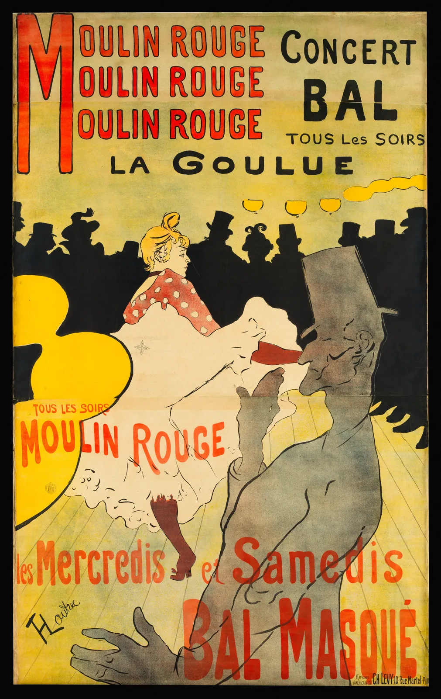
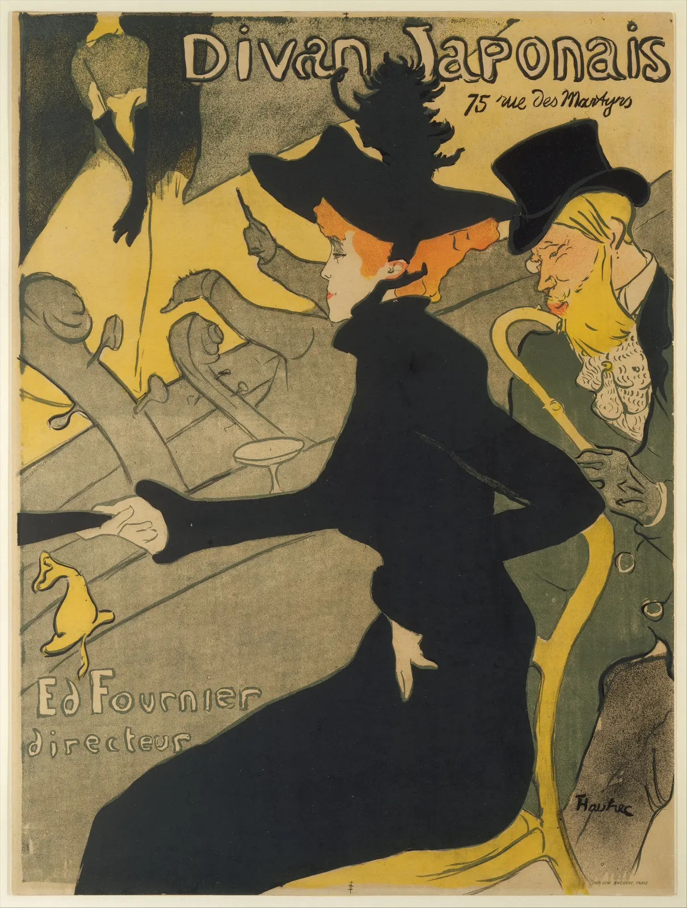

위계
동네 게시판 앞을 지나가는 사람은 안내문 한 장에 2초도 쓰지 않는다. 그 2초 동안 "무슨 모임인지", "언제인지", "어디인지"가 순서대로 들어와야 걸음을 멈춘다. 서윤이 만든 여름 낭독 모임 안내문의 첫 시안은 제목, 날짜, 장소, 본문, 신청 방법이 거의 같은 크기에 모두 굵었다. 어느 것도 틀리지 않았는데, 무엇부터 읽어야 할지 알 수 없었다. 글자에 순서를 주는 일을 위계(Hierarchy)라고 한다. 이 장은 크기, 굵기, 색, 간격, 위치라는 다섯 가지 손잡이로 위계를 만들고, 크기를 몇 배씩 키울지 정하는 모듈 스케일과, 단계를 늘릴수록 오히려 위계가 흐려지는 이유를 본다.
- 위계를 만드는 다섯 가지 변수(크기·굵기·색·간격·위치)를 하나씩 조작해 그 효과를 비교한다.
- 모듈 스케일(기준 크기 × 비율의 거듭제곱)로 크기 단계를 만들고, 비율에 따른 차이를 설명한다.
- 정해진 크기 범위 안에서 단계 수를 늘리면 이웃 단계가 구별되지 않는다는 것을 계산으로 확인한다.
- 흐리게 보기 테스트로 위계를 점검하고, 포스터와 옛 책에서 위계를 읽는다.
- A4 안내문 한 장의 위계 단계와 크기 비율을 정한다.
모두 같아 보이는 안내문
위계가 없는 지면은 모든 정보가 동시에 손을 드는 교실과 같다. 하나하나는 분명한데 누구 말을 먼저 들어야 할지 모른다. 위계는 독자에게 읽는 순서를 제안한다. 가장 먼저 볼 것(무슨 일인가), 그다음 볼 것(언제, 어디서), 관심이 생기면 읽을 것(자세한 내용), 필요한 사람만 찾아 읽을 것(신청 방법)을 지면 위에서 구별해 준다. 이 순서는 디자이너가 정하는 것이 아니라 글의 내용과 독자의 상황이 정한다. 같은 날짜라도 게시판 안내문에서는 두 번째로 중요하지만, 영수증에서는 맨 아래 작은 글씨가 맞다.
아래 시뮬레이터는 같은 안내문 한 장에 위계를 주는 방법을 하나씩만 써 본다. 처음에는 모든 글자가 같은 크기, 같은 굵기, 같은 색, 같은 간격이다. 변수를 하나 고르고 세기를 올려, 그 변수 하나만으로 순서가 얼마나 생기는지 본다.
위계의 다섯 손잡이를 하나씩
다섯 손잡이는 힘이 다르고 하는 일도 조금씩 다르다. 크기는 가장 강하게 순서를 만든다. 굵기는 같은 크기 안에서 무게를 더하고, 색은 성격을 구별하지만(날짜는 강조색, 문의는 차분한 색) 흑백에서는 약해진다. 간격과 위치는 순서보다 관계를 만든다. 무엇이 무엇과 한 묶음인지, 무엇이 따로 떨어져 있는지. 그래서 실제 지면은 거의 언제나 두세 개의 손잡이를 함께 쓴다. 다만 한 요소에 손잡이를 다 몰아 주면(크고, 굵고, 빨갛고, 밑줄까지) 강조가 아니라 소음이 된다.
크기, 굵기, 색, 간격, 위치
아래 그림은 같은 세 줄에 위계를 주는 다섯 가지 방법을 나란히 놓은 것이다. 어느 것이 옳은 것은 아니다. 지면의 성격과 쓸 수 있는 자원에 따라 고른다. 휴대폰 알림처럼 크기를 키울 공간이 없으면 굵기와 색으로, 흑백 복사될 안내문이면 크기와 굵기로, 글자를 하나도 바꿀 수 없는 법률 문서면 간격과 위치로 위계를 준다.
각 손잡이에는 알아 둘 성질이 있다. 크기는 넓이로 작용한다. 글자 크기를 1.5배로 키우면 획의 길이는 1.5배지만 차지하는 넓이는 2.25배가 되므로, 생각보다 훨씬 무거워진다. 굵기는 같은 글꼴 가족 안에서 두 단계 정도 건너뛰어야(보통 400과 700) 차이가 분명하다. 한 단계 차이(400과 500)는 작은 글자에서 거의 구별되지 않는다. 색은 명도 차이가 있어야 위계로 읽힌다(ColorBook 6장). 같은 명도의 다른 색상은 "종류가 다르다"는 신호이지 "더 중요하다"는 신호가 아니다. 그리고 7장의 대비 기준은 위계를 위해 옅게 만든 글자에도 그대로 적용된다. 위계를 낮춘다고 읽히지 않게 해서는 안 된다.
모듈 스케일: 크기를 몇 배씩 키울까
크기로 위계를 줄 때 가장 먼저 부딪히는 질문은 "몇 포인트로 할까"다. 본문 11pt에 제목 20pt, 소제목 15pt처럼 그때그때 정하면 지면마다 크기가 조금씩 달라지고, 비슷한 크기들이 쌓여 위계가 흐려진다. 그래서 많은 디자이너가 미리 정한 크기의 사다리, 곧 크기 단계(Type scale)를 두고 그 안에서만 고른다.
활판 인쇄 시절에는 활자 크기 자체가 정해져 있었다. 캐나다의 타이포그래퍼 로버트 브링허스트(Robert Bringhurst)는 『타이포그래피 스타일의 요소』(The Elements of Typographic Style, 1992)에서 6, 7, 8, 9, 10, 11, 12, 14, 16, 18, 21, 24, 36, 48, 60, 72pt로 이어지는 전통적인 크기 사다리를 소개하며, 크기를 이렇게 정해진 간격에서 고르라고 권했다. 2011년 웹 디자이너 팀 브라운(Tim Brown)은 이 생각을 화면으로 옮겨, 기준 크기에 일정한 비율을 거듭 곱해 단계를 만드는 모듈 스케일(Modular scale)을 소개했다.
음정 이름은 두 음의 진동수 비율에서 빌려 온 것일 뿐, 그 비율의 글자 크기가 음악처럼 "조화롭게" 들린다는 근거는 없다. 황금비도 마찬가지다(CompositionBook 비례 장). 모듈 스케일의 쓸모는 비율의 신비가 아니라 일관성에 있다. 크기를 몇 개의 단계로 묶어 두면 비슷한 크기가 섞이지 않고, 여러 지면이 같은 사다리를 공유한다. 비율이 작으면 단계가 촘촘해 미묘한 위계에 맞고, 크면 단계가 성겨 대비가 강한 포스터에 맞는다.
아래에서 기준 크기와 비율을 바꿔 사다리를 만들어 본다. 오른쪽 그래프의 맨 위 점을 위아래로 끌면 비율을 자유롭게 바꿀 수 있다.
모듈 스케일 만들기
그래프에서 모듈 스케일은 곧은 직선이 되고, 전통 사다리의 점들은 그 직선들 주위에 흩어진다. 작은 크기에서는 1pt씩 촘촘하게(9, 10, 11, 12), 큰 크기에서는 성기게(24, 36, 48) 놓인 것이 보인다. 비율은 일정하지 않지만, 큰 크기일수록 간격을 넓힌다는 생각은 같다. 사람이 크기의 차이를 절댓값이 아니라 비율로 느끼기 때문이다. 9pt와 10pt의 차이는 보이지만 60pt와 61pt의 차이는 보이지 않는다.
두세 단계면 충분한 이유
위계를 세우다 보면 단계를 자꾸 늘리고 싶어진다. 제목, 부제, 날짜, 장소, 시간, 본문, 강조 본문, 주석, 문의처… 각자 조금씩 다른 크기를 주면 정보의 차이를 섬세하게 표현할 수 있을 것 같다. 그러나 지면에는 크기의 바닥과 천장이 있다. 바닥은 읽힐 수 있는 가장 작은 크기(7장에서 정한 최소 크기)이고, 천장은 지면에 들어가는 가장 큰 크기다. 이 범위가 정해진 채 단계 수를 늘리면, 이웃한 두 단계의 비율은 반드시 줄어든다.
이웃 단계의 비율이 작아지면 두 단계가 따로 있을 때는 달라 보여도, 지면 여기저기 흩어져 있을 때는 같은 단계로 읽힌다. 아래 시뮬레이터의 오른쪽 열은 단계들을 뒤섞어 놓은 것이다. 단계 수를 늘려 가며 섞인 열에서 순서를 맞힐 수 있는지 스스로 시험해 본다.
단계를 늘리면 이웃 단계가 녹아 붙는다
얼마나 다르면 "다른 단계"로 읽힐까. 실험실에서 두 선분의 길이를 나란히 놓고 비교하면 사람은 몇 퍼센트의 차이도 알아챈다. 그러나 위계에 필요한 것은 "알아챌 수 있는 차이"가 아니라 "지면 이곳저곳에 떨어져 있어도 한눈에 같은 단계와 다른 단계가 갈리는 차이"다. 이 문턱에 대해 일반적으로 받아들여진 수치는 이 책이 확인한 범위에서는 없다. 실무에서는 이웃 단계가 적어도 1.2~1.25배는 달라야 크기만으로 구별된다는 말을 흔히 하지만, 이것은 경험칙이다. 위 시뮬레이터에서 각자 문턱을 찾아보는 것이 더 정직하다.
그래서 경험 많은 디자이너들은 크기 단계를 적게 쓰고, 단계 사이를 넓힌다. 한 장짜리 안내문이라면 크기는 두세 단계면 대개 충분하다. 그 이상 구별이 필요하면 크기 단계를 늘리기보다 같은 크기 안에서 굵기나 색, 간격을 쓴다. 예를 들어 "신청 방법"과 "본문"을 다른 크기로 나누는 대신 같은 크기에 색만 차분하게 바꾸는 식이다. 크기는 가장 강한 손잡이라 아껴 쓸수록 힘이 세다.
크기 대신 굵기: 무게를 맞추는 법
크기 단계를 아끼려면 굵기와 색으로 무게를 조절할 줄 알아야 한다. 굵은 작은 글자와 보통 굵기의 큰 글자는 어느 쪽이 더 무거워 보일까. 시각적 무게에는 여러 요인이 있지만, 쉽게 잴 수 있는 것은 글자가 종이 위에 놓는 잉크의 양(Ink area)이다. 같은 낱말을 크기와 굵기를 바꿔 가며 그리고, 검은 점의 수를 세어 비교해 본다.
굵게 쓴 작은 글자와 보통 굵기의 큰 글자
잉크 양으로 보면, 굵게 쓴 글자는 높이가 80% 남짓만 되어도 보통 굵기의 큰 글자와 비슷한 무게를 갖는다. 그래서 크기 단계 두 개 사이에 굵기를 끼워 넣으면 크기 단계를 늘리지 않고도 중간 무게를 만들 수 있다. 반대로 이미 큰 제목을 굵게까지 하면 무게가 겹으로 늘어나 다른 요소를 모두 누른다. 제목을 크게 할 때 굵기를 오히려 내리는 디자이너가 있는 이유다. 큰 글자는 가늘어도 충분히 무겁다.
간격도 위계다
글자 크기를 하나도 바꾸지 않고도 위계를 만들 수 있다. 앞의 그림 1 ④처럼, 관련된 것끼리는 가깝게, 다른 것과는 멀게 두면 독자는 덩어리를 먼저 보고 그 안을 나중에 읽는다. 간격이 만드는 위계에서 중요한 것은 절대 크기가 아니라 비율이다. 묶음 안의 줄 간격보다 묶음 사이의 간격이 충분히 커야 묶음이 보인다. 아래에서 손잡이를 끌어 날짜·장소 묶음과 본문 사이의 간격을 바꾼다.
묶음 안의 간격과 묶음 사이의 간격
간격의 위계는 가장 조용한 위계다. 굵기나 색처럼 눈에 띄지 않으면서 읽는 순서를 정리한다. 그래서 정보가 많은 지면일수록 간격부터 정하고, 그다음에 크기와 굵기를 더하는 편이 깔끔하다. 단락 사이 간격과 들여쓰기는 10장에서, 간격을 일정한 격자로 묶는 방법은 9장에서 이어서 다룬다.
흐리게 보기 테스트와 실제 작품
위계를 점검하는 가장 값싼 방법은 지면을 흐리게 보는 것이다. ColorBook 6장의 "눈을 가늘게 뜨는 점검"과 같은 원리다. 흐리게 보면 글자를 읽을 수 없으므로 내용이 아니라 무게의 배치만 남는다. 무엇이 가장 먼저 떠오르는지, 덩어리가 몇 개로 보이는지, 처음 의도한 순서와 같은지를 본다. 지면을 몇 걸음 떨어져 보거나, 화면을 엄지손톱만 하게 줄이는 것도 같은 시험이다.
이 시험을 19세기 말의 포스터에 해 본다. 파리의 화가 앙리 드 툴루즈로트레크(Henri de Toulouse-Lautrec)가 카바레 물랭 루주를 위해 만든 첫 포스터다.


아래 시뮬레이터로 두 포스터와 서윤의 안내문 시안을 흐리게 본다. 경계선을 끌어 원본과 흐린 모습을 비교하고, 흐림 정도를 올려 본다.
흐리게 보면 남는 순서
흐리게 보기는 글자뿐 아니라 그림과 여백까지 포함한 지면 전체의 위계를 보여 준다. 디방 자포네처럼 그림이 첫 번째 위계를 맡는 지면이라면, 글자의 위계는 그 그림 다음 순서에서 시작한다. 안내문에 그림을 넣는다면 그림과 제목 중 무엇이 먼저 읽혀야 할지부터 정해야 한다. 그림과 글이 같은 무게로 다투면 둘 다 약해진다.
옛 책의 위계: 본문과 협주
위계는 인쇄 포스터의 발명품이 아니다. 동아시아의 옛 책은 수백 년 동안 크기와 위치만으로 정교한 위계를 만들어 왔다. 가장 대표적인 것이 협주(夾註, Interlinear commentary)다. 경전의 본문은 큰 글자로 한 줄에 쓰고, 그 뜻을 풀이한 주석은 본문 글자의 절반쯤 되는 작은 글자로 같은 줄 안에 두 줄로 나눠 넣는다. 그래서 흔히 "두 줄로 쓴 작은 주"라는 뜻으로 쌍행주(雙行註)라고도 부른다. 본문과 주석이 같은 줄 흐름 안에 있어 끊김 없이 읽히면서도, 크기만 보고 둘을 바로 구별할 수 있다.
협주의 크기 비율은 대략 2:1로, 앞에서 본 모듈 스케일로 치면 옥타브 한 단계다. 단계는 둘뿐이지만 그 사이가 넓어 섞일 일이 없다. 한글 조판에서도 이 전통은 이어져서, 오래된 사전이나 주석서에는 본문 사이에 작은 글자로 풀이를 넣는 방식이 남아 있다. 오늘날 웹 문서의 각주나 툴팁, 책의 옆주가 하는 일도 같다. 본문을 끊지 않으면서 다른 층의 정보를 곁에 둔다. 단계가 적을수록 단계 사이를 넓게 줄 수 있고, 넓을수록 구별이 확실하다는 이 장의 원리가 수백 년 된 지면 위에도 있다.
안내문 위계 설계기
이제 이 장의 손잡이를 모두 모아 여름 낭독 모임 안내문 한 장의 위계를 직접 짠다. A4 지면 위의 요소(제목, 날짜, 장소, 본문, 신청 방법)를 누르면 크기 단계가 0 → 1 → 2 → 3으로 차례로 바뀐다. 0이 기준 크기(본문)다. 슬라이더로 기준 크기와 비율을 정하고, 굵기와 색을 켜고 끈다. "흐리게 보기"를 켜면 지면 전체를 흐린 모습으로 점검할 수 있다.
「여름 낭독 모임」 안내문 위계 설계기
설계기에서 여섯 단계와 세 단계를 비교하면, 크기를 더 세밀하게 나눈 쪽이 오히려 순서가 덜 보인다. 위계는 정보의 차이를 모두 지면에 옮기는 일이 아니다. 독자가 처음 2초 동안 알아야 할 것과 나중에 찾아 읽을 것을 크게 나누고, 그 안의 작은 차이는 굵기, 색, 간격 같은 조용한 손잡이에 맡기는 일이다.
서윤의 작업 노트
모든 글자가 손을 들고 있었다
7월 둘째 주, 서윤은 여름 낭독 모임 안내문(A4, 인쇄와 PDF)의 첫 시안을 책방 게시판에 임시로 붙여 보았다. 제목 「여름 낭독 모임」은 18pt, 날짜("8월 7일 · 21일 토요일 오후 5시"), 장소("책방 E 2층"), 본문, 신청 방법은 모두 14pt였고, 놓칠까 봐 전부 굵게 했다. 색도 요소마다 달랐다. 지나가던 손님 둘이 안내문 앞에 섰다가 "무슨 모임이에요?" 하고 계산대에 물었다. 답은 안내문 맨 위에 있었다.
한도경은 시안을 보더니 연필로 각 줄 옆에 1, 2, 3을 적었다. 제목이 1, 날짜와 장소가 2, 본문과 신청 방법이 3이었다. "번호는 셋인데 글자 크기는 둘이고, 굵기는 하나야. 순서가 지면에 안 보이지." 이 책의 모델로 계산하면 18÷14는 약 1.29다. 흐리게 보기 테스트에서 제목과 날짜 줄은 비슷한 진하기의 띠로 남았다.
서윤의 선택은 이렇다. 크기 단계는 셋으로 하고, 비율은 1.5(완전5도)로 정했다. 7장에서 정한 인쇄 본문 최소 크기(10pt 안팎)보다 한 단계 여유를 두어 본문은 11pt, 날짜와 장소는 11 × 1.5 = 16.5pt, 제목은 11 × 1.5³ ≈ 37.1pt, 실제로는 37pt다. 그 사이의 24.75pt 단계는 일부러 비워 제목과 정보 사이를 넓혔다. 신청 방법은 본문과 같은 11pt로 두고 크기 대신 색(차분한 초록 #567666)과 위치(지면 아래쪽)로 구별했다. 굵기는 제목과 날짜·장소에만 700을 주고 나머지는 400으로 내렸다. 색은 셋으로 줄였다. 제목은 책방 초록 #2f7d5b, 날짜는 강조 #d24f39, 나머지는 짙은 색 #22342a와 차분한 초록이다. 날짜에 쓴 강조색은 흰 종이 대비 4.27이지만, 16.5pt 굵은 글자는 7장의 "큰 글자"(굵게 14pt, 약 18.66px 이상) 조건을 넘으므로 기준 3:1을 지킨다. 묶음 사이 간격은 묶음 안 줄 간격의 두 배 이상으로 두었다.
7장의 시각 계산으로 확인해 보니, 제목은 2 m 밖에서 한글 높이가 약 21′, 날짜와 장소는 1 m에서 약 18′, 본문은 손에 들고 40 cm에서 약 30′였다(굵기에 따라 조금 다르다). 지나가며 제목을 보고, 다가와 날짜를 보고, 떼어 들고 본문을 읽는 세 걸음과 세 단계가 맞아떨어진다. 흑백으로 복사한 판에서도 크기와 굵기가 남아 순서가 무너지지 않았다. 도경은 다시 번호를 매겨 보고는 "이번엔 종이에 적힌 번호랑 내 번호가 같네" 했다.
37pt · 700
날짜 1단계16.5pt · 700
장소 1단계 · 본문 0단계16.5pt · 11pt
신청 방법 0단계11pt · 400
#567666)과 위치로만 구별한다. 색은 제목 #2f7d5b, 날짜 #d24f39, 장소·본문 #22342a, 신청 방법 #567666. 묶음 사이 간격은 묶음 안 줄 간격의 두 배 이상.핵심 정리
- 위계는 독자에게 읽는 순서를 제안한다. 순서는 디자이너의 취향이 아니라 글의 내용과 독자의 상황이 정한다.
- 위계의 손잡이는 크기·굵기·색·간격·위치다. 크기가 가장 강하고, 색은 명도 차이가 있어야 위계로 읽히며, 간격과 위치는 순서보다 묶음을 만든다.
- 모듈 스케일은 기준 크기에 일정한 비율을 거듭 곱해 크기 단계를 만든다. 음정·황금비 같은 이름에 특별한 지각적 근거는 없고, 쓸모는 일관성에 있다.
- 크기의 바닥과 천장이 정해진 채 단계를 늘리면 이웃 단계의 비율이 줄어 구별되지 않는다. 크기 단계는 두세 개로 아끼고, 더 나눌 것은 굵기·색·간격으로 나눈다.
- 굵기는 크기 단계를 아끼는 손잡이다. 굵은 작은 글자가 보통 굵기의 큰 글자와 비슷한 잉크 양을 가질 수 있고, 흑백에서도 살아남는다.
- 흐리게 보기 테스트로 무게의 배치를 점검한다. 규칙을 깬 포스터(물랭 루주)도, 협주처럼 두 단계뿐인 옛 책도, 흐리면 몇 개의 분명한 덩어리로 정리된다.
확인 퀴즈
1. 본문 10pt, 비율 1.25의 모듈 스케일에서 위로 두 단계 올라간 크기는?
2. A4 안내문에서 가장 작은 글자는 11pt, 가장 큰 글자는 37pt로 정해져 있다. 크기 단계를 3개에서 8개로 늘리면 어떤 일이 생기는가?
3. 흑백으로 복사될 안내문에서 날짜만 다른 색상(같은 명도의 붉은색)으로 바꿔 강조했다. 이 강조에 대한 판단으로 가장 알맞은 것은?
4. 툴루즈로트레크의 「물랭 루주: 라 굴뤼」에는 크기가 여섯 가지가 넘는 글자가 쓰였다. 이 포스터가 무질서해 보이지 않는 이유로 가장 알맞은 것은?
출처와 글꼴
- Bringhurst, R. (1992; 개정판 다수). The Elements of Typographic Style. Hartley & Marks. (전통적인 크기 사다리와 크기 단계를 고르는 원칙)
- Brown, T. (2011). More Meaningful Typography. A List Apart. (모듈 스케일)
- 주희(朱熹), 『논어집주(論語集註)』 학이편 첫 장의 풀이를 줄여 그림 4에 썼다.
- 그림 2의 글자 높이는 이 책이 실은 사진(높이 1600px)에서 눈으로 잰 대략값이다. "이웃 단계 1.2~1.25배"는 실무의 경험칙이며 연구로 확정된 수치가 아니다.
- 글꼴: Noto Sans KR, Noto Serif KR(Google, Adobe의 본고딕·본명조와 같은 설계). SIL Open Font License 1.1, Google Fonts로 불러왔다.